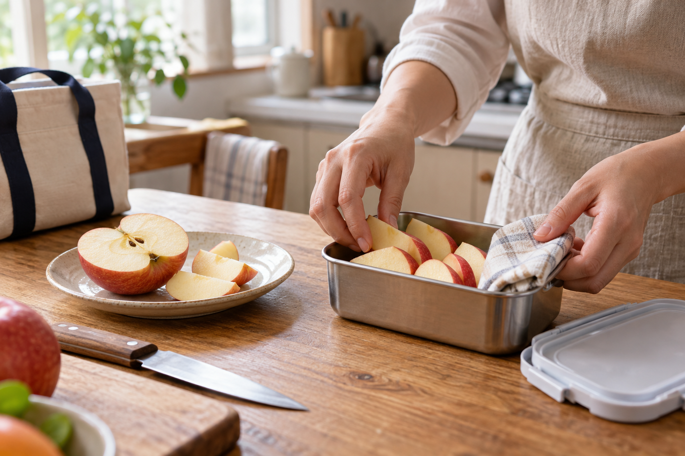

EDUCATION · 2026.10.11
남은 사과 반쪽,
내일 도시락으로 데려가는 법
식탁에 남은 사과 반쪽을 그냥 덮어 두기보다, 내일 누구의 어느 시간에 먹을지 먼저 떠올려 봅니다. 과일을 권하는 일은 그다음부터 조금 구체적이 됩니다.

저녁 식탁을 치우다 보면 사과 반쪽이 남을 때가 있습니다. 랩을 씌워 냉장고에 넣어 두고 문을 닫으면 일은 끝난 듯합니다. 하지만 다음 날 아침이 되면 그 반쪽이 왜 남았는지, 누가 먹을지, 언제 꺼낼지는 다시 생각해야 합니다. 남은 과일은 보관하는 순간보다 다음 자리를 정할 때 더 또렷해집니다.
도시락을 챙기는 아침이라면 답이 조금 쉬워집니다. 사과를 먹기 좋은 만큼 썰어 작은 통에 담고, 젖지 않게 접은 냅킨을 곁에 둡니다. 학교 쉬는 시간일지, 회의가 끝난 뒤일지, 집에 돌아오는 길일지는 사람마다 다릅니다. 같은 사과라도 그 시간에 맞춰 담기면 ‘남은 것’이 아니라 기다리고 있는 간식이 됩니다.
과일코디네이터 교육에서도 이 장면은 좋은 연습이 됩니다. “사과를 좋아하세요?”라고 먼저 묻는 대신, “내일 밖에서 드실 일이 있나요?”라고 물어볼 수 있습니다. 답에는 가방의 크기, 손을 씻을 수 있는지, 칼을 쓸 수 있는지 같은 생활 조건이 따라옵니다. 추천은 품종 이름에서만 시작하지 않습니다. 먹을 시간이 보이면 과일의 모양과 양도 함께 달라집니다.
과일을 남기지 않는 법은
억지로 다 먹는 일이 아니라, 다음 한 끼의 자리를 찾아 주는 일입니다.
꼭 도시락이 아니어도 됩니다. 아침에 나가기 전 한 조각을 접시에 꺼내 둘 수도 있고, 가족에게 “내일 가져갈래?” 하고 물어볼 수도 있습니다. 중요한 것은 남은 사과를 책임처럼 여기지 않는 일입니다. 오늘의 식탁에서 끝나지 않은 과일이 내일의 리듬에 들어갈 길을 하나만 만들면 됩니다.
교육은 정답을 외우는 시간이 아니라, 이런 작은 장면을 더 잘 보는 연습에 가깝습니다. 냉장고 속 사과 반쪽을 보고 누군가의 내일을 한 번 떠올리는 일. 그 질문 하나가 과일을 더 알맞게 권하고, 끝까지 기분 좋게 먹게 하는 출발점이 됩니다.
KFA Editorial · 생활 속 장면을 구성한 에세이입니다. 특정 인물의 취재 기록이 아닙니다.